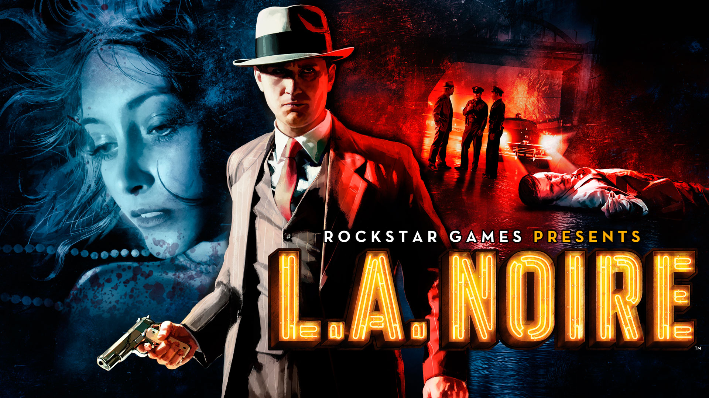

L.A NOIRE
1940’lı yıllarda geçen türünün en iyi örneği olan L.A Noire’de Amerika’da görevli bir dedektifsiniz. Rockstar Games tarafından yapılan oyunu çok fazla şans verilmeyen ”dedektif” türünün en başarılı örneği olarak gösterebiliriz. Oyunda görevimiz gereği dedektif olarak bazen katillerin, bazen ise kundakçıların peşine düşüyoruz. Dedektiflik türünde çok fazla oyun çıkmadığı için Rockstar Games’in arkasında olduğu bu oyuna şans vermenizi öneriyorum.
